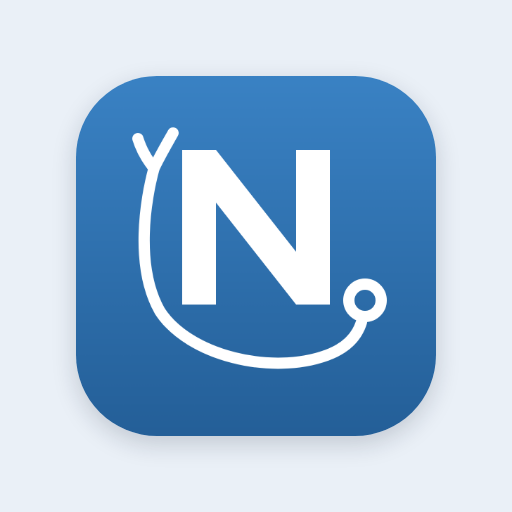

For home health & 1099 nurses
Get your evenings back.
You didn't become a nurse to chart in your car at 9 PM. NurseTrack writes your visit notes in minutes, captures every mile for tax season, and maps your day — so the paperwork ends when the last visit does.
HIPAA-ready — your patients' names never leave your phone.

Wednesday · 6 visits Good evening, done for the day.The home-health charting trap
The visits end at 5. The charting doesn't.
Home-health clinicians spend 30–45 minutes documenting every visit — and with a full day of patients, most of it spills into the evening. It's the number-one reason nurses burn out and leave. NurseTrack gives that time back.
What NurseTrack does
Everything the paperwork used to steal from you.
Four things eat a home-health nurse's day: notes, miles, driving, and juggling a caseload on a phone. NurseTrack handles all four.
Chart in minutes — not in your driveway.
Enter the visit once and NurseTrack drafts a clean, Kinnser/WellSky-ready SN note — wound care, vitals, skilled assessment, the works. Review, tweak, done. What used to take 15–20 minutes takes two.
Turn every mile into a deduction.
NurseTrack logs your work miles automatically at the 2026 IRS rate, keeps the contemporaneous record the IRS actually requires, and exports a clean CSV at tax time. For a nurse driving a real caseload, that's thousands of dollars you were leaving on the table.
Less time driving, more time nursing.
NurseTrack orders your day's visits into the shortest sensible route and lays them out on a map. Fewer backtracks, fewer wasted miles, and you always know who's next and how long it'll take to get there.
Your whole caseload, on your phone in seconds.
Have a roster in a spreadsheet — or on paper? Drop in a file or snap a photo and NurseTrack pulls in a hundred clients at once — names, addresses, care flags — geocoded and ready to route. No re-typing a single patient.
Addresses geocoded · care flags mapped · ready to route
Earnings & pay periods
Every visit priced, every pay period totaled. Know what each agency owes you before the check arrives.
Patient reminder texts
Optional "your nurse is on the way" texts — first name and time window only, never clinical details.
Photo OCR import
Snap a paper roster or a screenshot and NurseTrack reads it into your caseload — no typing.
A day with NurseTrack
From first coffee to closed laptop — before dinner.
Your day, mapped
Open the app to your visits already ordered into the shortest route, with drive times and who needs what.
First visit, logged on the spot
Chart the visit in the room. Miles start counting the moment you pull away.
Notes drafted between visits
Tap generate and your SN note is written while you eat — not tonight.
Last patient, last note
Six visits done, six notes drafted, 47 miles logged — all before you're home.
Actually off the clock
No 9 PM charting. The paperwork ended with the workday. That's the whole point.
Tax season, sorted
Export a clean, IRS-ready mileage log — every deductible mile already counted.
Built for patient privacy
Your patients' privacy isn't an afterthought.
Pasting patient details into ChatGPT isn't HIPAA-safe — and it's a real risk to your license. NurseTrack was built the opposite way.
Notes are drafted from initials and city only — no name, DOB, or address goes to the AI.
Wound photos and records are stored in access-controlled, encrypted cloud storage — never in a public bucket.
Every access to patient data is logged — the accountability HIPAA expects.
HIPAA-ready by design
Encryption in transit and at rest, least-privilege access, and PHI minimization on every AI request.
One plan. Every feature.
Pays for itself in one week of evenings.
Everything, unlimited
Stop charting in your car.
NurseTrack is launching soon. Join the waitlist and be first in line for the 14-day free trial — and get your evenings back.
Joining opens an email to hello@nursetrack.app — that's how we save your spot. No spam, ever.
Didn't see it? Email us directly and we'll add you.